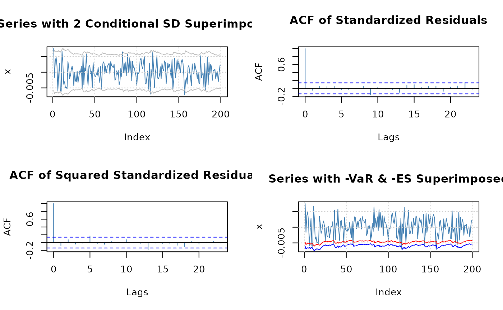

GARCH plot methods
methods-plot.RdPlot methods for GARCH modelling.
Details
The plot method for "fGARCH" objects offers a selection
of diagnostic, exploratory, and presentation plots from a menu.
Argument which can be used to request specific plots. This is
particularly useful in scripts.
If which is of length larger than one, all requested plots are
produced. For this to be useful, the graphics window should be split
beforehand in subwindows, e.g., using par(mfrow = ...),
par(mfcol = ...), or layout() (see section
‘Examples’). If this is not done, then only the last plot will
be visible.
The following graphs are available:
| 1 | Time SeriesPlot |
| 2 | Conditional Standard Deviation Plot |
| 3 | Series Plot with 2 Conditional SD Superimposed |
| 4 | Autocorrelation function Plot of Observations |
| 5 | Autocorrelation function Plot of Squared Observations |
| 6 | Cross Correlation Plot |
| 7 | Residuals Plot |
| 8 | Conditional Standard Deviations Plot |
| 9 | Standardized Residuals Plot |
| 10 | ACF Plot of Standardized Residuals |
| 11 | ACF Plot of Squared Standardized Residuals |
| 12 | Cross Correlation Plot between $r^2$ and r |
| 13 | Quantile-Quantile Plot of Standardized Residuals |
| 14 | Series with -VaR Superimposed |
| 15 | Series with -ES Superimposed |
| 16 | Series with -VaR & -ES Superimposed |
Author
Diethelm Wuertz for the Rmetrics R-port;
VaR and ES graphs were added by Georgi N. Boshnakov in v4033.92
Examples
## simulate a Garch(1,1) time series
x <- garchSim(n = 200)
head(x)
#> GMT
#> garch
#> 2025-04-27 0.0001009826
#> 2025-04-28 0.0037721234
#> 2025-04-29 -0.0007966092
#> 2025-04-30 0.0050954355
#> 2025-05-01 0.0045399370
#> 2025-05-02 0.0015539500
## fit GARCH(1,1) model
fit <- garchFit(formula = ~ garch(1, 1), data = x, trace = FALSE)
if (FALSE) { # \dontrun{
## choose plots interactively
plot(fit)
} # }
## Batch Plot:
plot(fit, which = 3)
## a 2 by 2 matrix of plots
op <- par(mfrow = c(2,2)) # prepare 2x2 window
plot(fit, which = c(10, 11, 3, 16)) # plot

par(op) # restore the previous layout